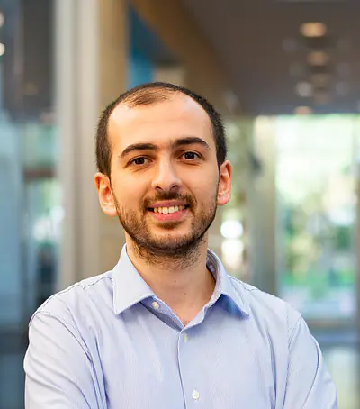

I am a co-founder and the CTO of Mulberi, where we are building an AI-native application security testing platform that reasons about applications the way a human penetration tester does.
Before starting Mulberi, I was a Postdoctoral Fellow in the Computer Science Department at Dartmouth College. I received my Cybersecurity PhD degree from Khoury College of Computer Sciences at Northeastern University in Boston. I am fortunate to have had Engin Kirda as my PhD advisor.
My research is centered around designing and building offense and defense techniques to improve the security of the Internet. Much of my work has focused on the security challenges of distributed content delivery on the Web — finding classes of attacks (and defenses) that emerge when chains of servers interpret the same HTTP traffic differently. Tools from this line of work have been adopted by the developers of Apache Traffic Server, which powers several major CDNs, and the papers are taught in security curricula at institutions such as CISPA.
I am also interested in biomimetic security research. Before Dartmouth, I was a postdoc in Saket Navlakha's lab at Cold Spring Harbor Laboratory, where I worked with a team of people from computer science and immunology, and studied the immune system and viruses to find solutions to cybersecurity problems. Some of what I learned there is written up on my blog.
A complete record is in my curriculum vitae.